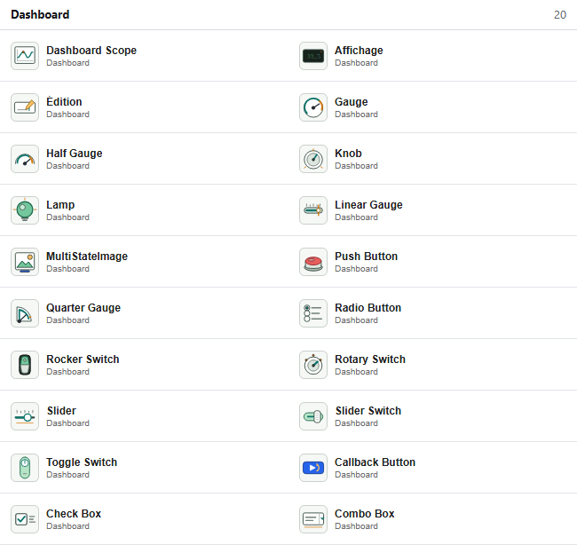
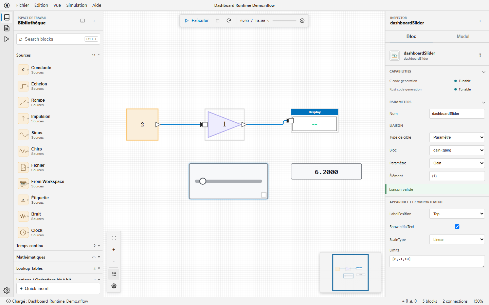

Bibliothèque Dashboard : affichages, contrôles, liaisons et actions de rappel
Les blocs Dashboard fournissent des contrôles et des affichages directement sur un diagramme NFlow. Ils n'ont pas de ports d'entrée ou de sortie ordinaires : chaque bloc lit ou modifie une cible choisie dans la section Binding de l'inspecteur.
Blocs disponibles
| Famille | Blocs | Rôle |
|---|---|---|
| Affichage de signaux | Dashboard Scope, Display | Tracer les échantillons horodatés ou afficher la dernière valeur typée. |
| Jauges | Gauge, Half Gauge, Quarter Gauge, Linear Gauge | Afficher une valeur scalaire avec des limites et des zones colorées facultatives. |
| Affichage d'états | Lamp, MultiStateImage | Associer les valeurs d'un signal à des couleurs ou à des images. |
| Contrôles continus | Edit, Knob, Slider | Régler un paramètre ou une variable scalaire par saisie ou par pointeur. |
| Contrôles à états | Push Button, Rotary Switch, Radio Button, Combo Box, Check Box, Rocker Switch, Slider Switch, Toggle Switch | Sélectionner l'un des états numériques configurés. |
| Action | Callback Button | Évaluer du code Nelson lors d'un clic ou d'un appui, sans liaison. |

Créer une liaison
Sélectionnez un bloc Dashboard, puis choisissez sa cible dans l'inspecteur. L'état sous le sélecteur indique Liaison valide, Non connecté ou une erreur précise. Les liaisons utilisent des identifiants de blocs stables : l'enregistrement, le rechargement, le renommage, la copie et les sous-systèmes imbriqués ne dépendent pas des libellés affichés.
| Cible | Blocs concernés | Configuration et application |
|---|---|---|
| Signal | Tous les blocs d'affichage | Choisissez une sortie de bloc, son port à base un et le traitement Sample ou Frame. La valeur est lue après chaque pas majeur. |
| Paramètre | Tous les contrôles sauf Callback Button | Choisissez un bloc, un paramètre numérique réglable et éventuellement un élément scalaire. Une modification validée est visible au pas majeur suivant. |
| Variable | Tous les contrôles sauf Callback Button | Choisissez l'espace Diagram, Base ou Global, une variable numérique et éventuellement un élément scalaire. |
Utilisez une notation d'élément à base un, par exemple (2) ou (2,3). Un champ d'élément vide sélectionne la cible complète et n'est valide que si elle est scalaire. Les blocs, ports, variables ou éléments absents, les valeurs non numériques et les cibles non réglables sont rejetés avant la simulation.

Manipuler les contrôles
Les contrôles restent utilisables lorsque la simulation est en cours, en pause ou arrêtée. Un geste commencé sur un contrôle lui reste attribué jusqu'au relâchement, même si la simulation se termine pendant le geste. Faites glisser le corps du bloc en dehors du contrôle pour déplacer le bloc. Slider et Knob acceptent le déplacement au pointeur, les flèches pour les petits incréments et Origine ou Fin pour atteindre leurs limites. Les contrôles natifs Edit et Combo Box perdent le focus lorsque l'arrière-plan du diagramme est sélectionné.
Apparence et comportement
| Blocs | Propriétés principales |
|---|---|
| Tous les blocs concernés | LabelPosition, ShowInitialText, Opacity et Binding. |
| Dashboard Scope | TimeSpan, UpdateMode, YLimits, NormalizeYAxis, ScaleAtStop, légende, grille, graduations, marqueurs, bordure et couleurs. |
| Jauges, Slider, Knob | Limits ; les jauges proposent aussi ScaleColors et ScaleDirection. Slider et Knob proposent une échelle ScaleType Linear ou Log. |
| Display et Edit | Alignement et opacité. Display propose aussi Format, FormatString, la disposition, l'affichage de la grille et sa couleur. |
| Contrôles à états | States ou Values, libellés, type énuméré facultatif, type de bouton, texte et propriétés d'icône selon le bloc. |
| Lamp et MultiStateImage | Couleurs par défaut et par état, ou images d'état avec ScaleMode. |
Les limites et les états sont validés par l'inspecteur. Une échelle logarithmique requiert des limites utilisables strictement positives. L'opacité est comprise entre 0 et 1. Dashboard Scope limite son tracé à l'intérieur du bloc et aux limites Y configurées.
Callback Button
Un clic court évalue ClickFcn. Un maintien de PressDelay millisecondes évalue PressFcn ; une valeur positive de RepeatInterval répète cette action pendant le maintien. Le délai d'appui par défaut est de 500 ms. Les erreurs de rappel sont affichées dans la Console sans arrêter la simulation.
Génération de code C et Rust
| Capacité | Comportement Dashboard |
|---|---|
| Instrumentation | Les blocs d'affichage sont validés puis retirés du code généré sans modifier les résultats numériques. |
| Réglable | Une cible scalaire compatible devient un champ typé de ModelState avec un setter stable. Une modification entre deux appels de pas s'applique au pas suivant. |
| Non pris en charge | Le code de Callback Button n'est jamais généré. Les cibles structurelles, composites ou non prises en charge sont rejetées avant l'écriture des fichiers. |
open_system([modulepath('nflow_blocks'), '/examples/Dashboard_Runtime_Demo.nflow']);open_system([modulepath('nflow_blocks'), '/examples/Dashboard_Gallery_Demo.nflow']);| Version | Description |
|---|---|
| 2.0.0 | version initiale |